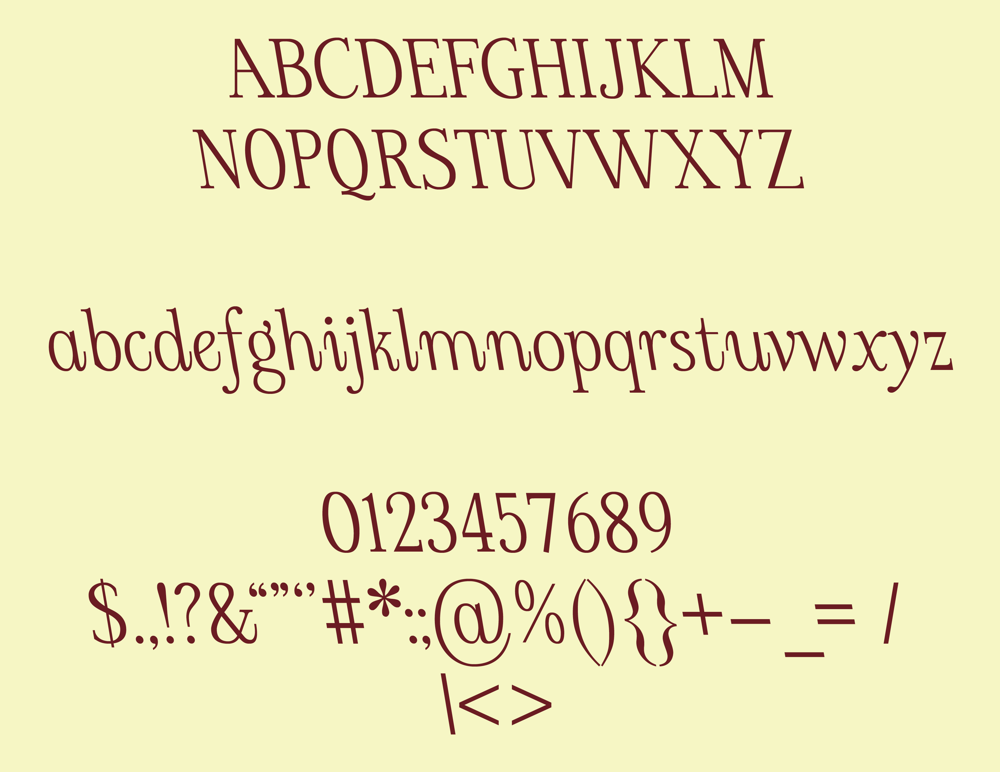
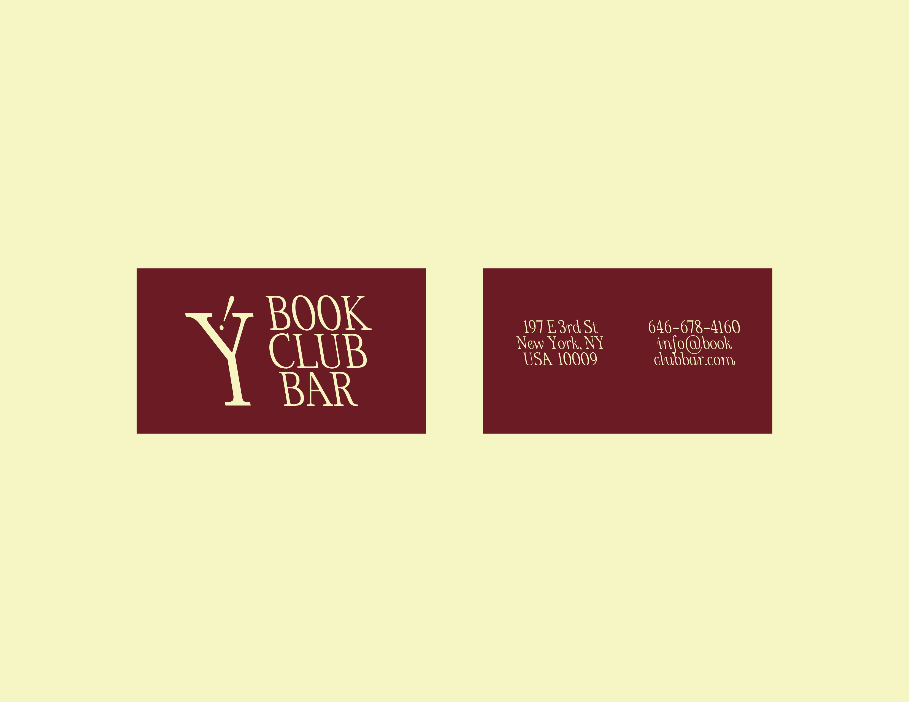
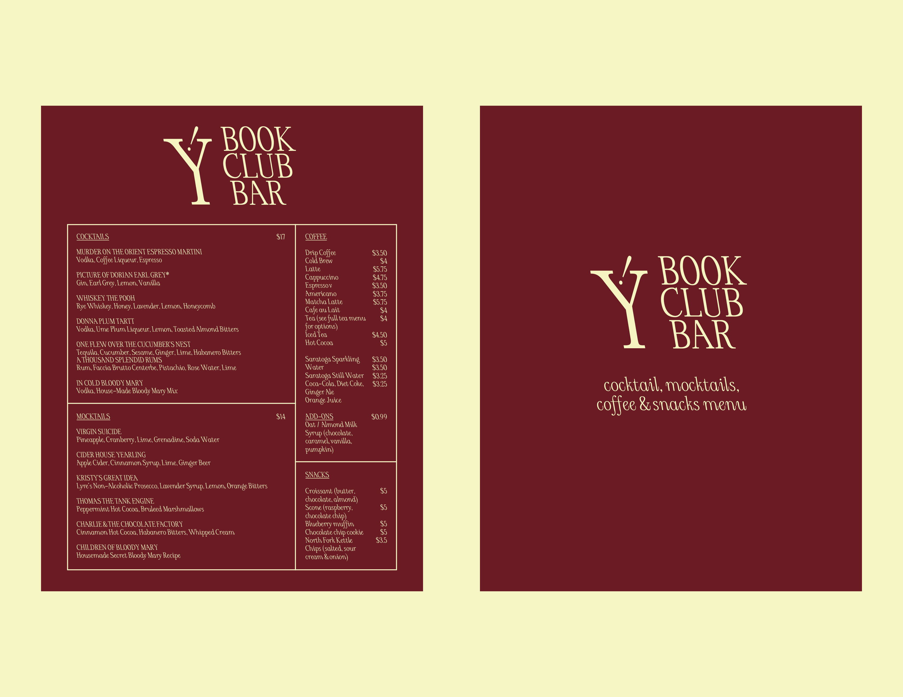
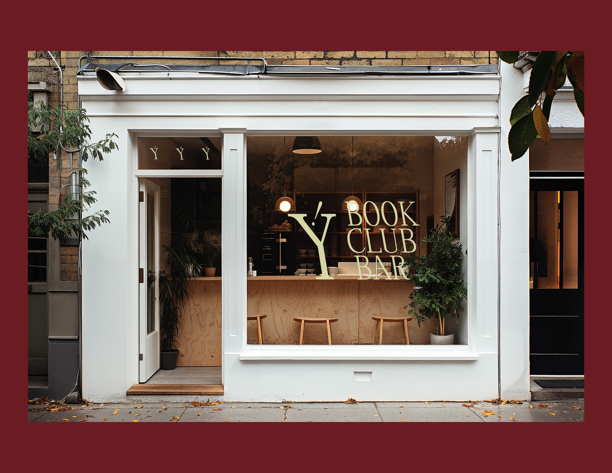
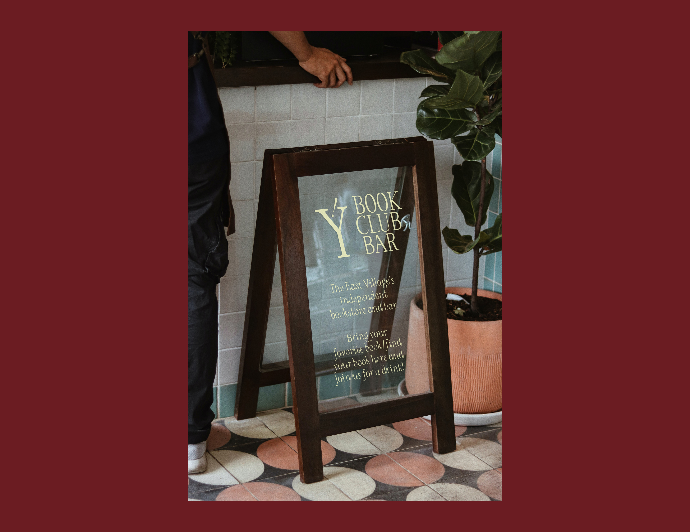
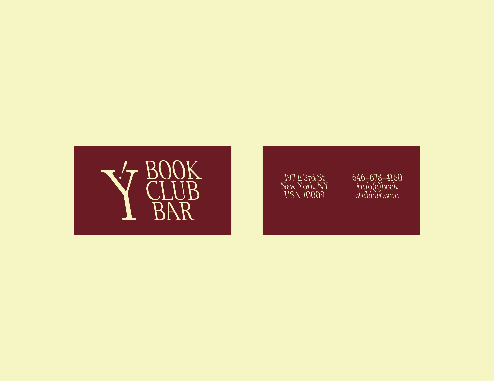
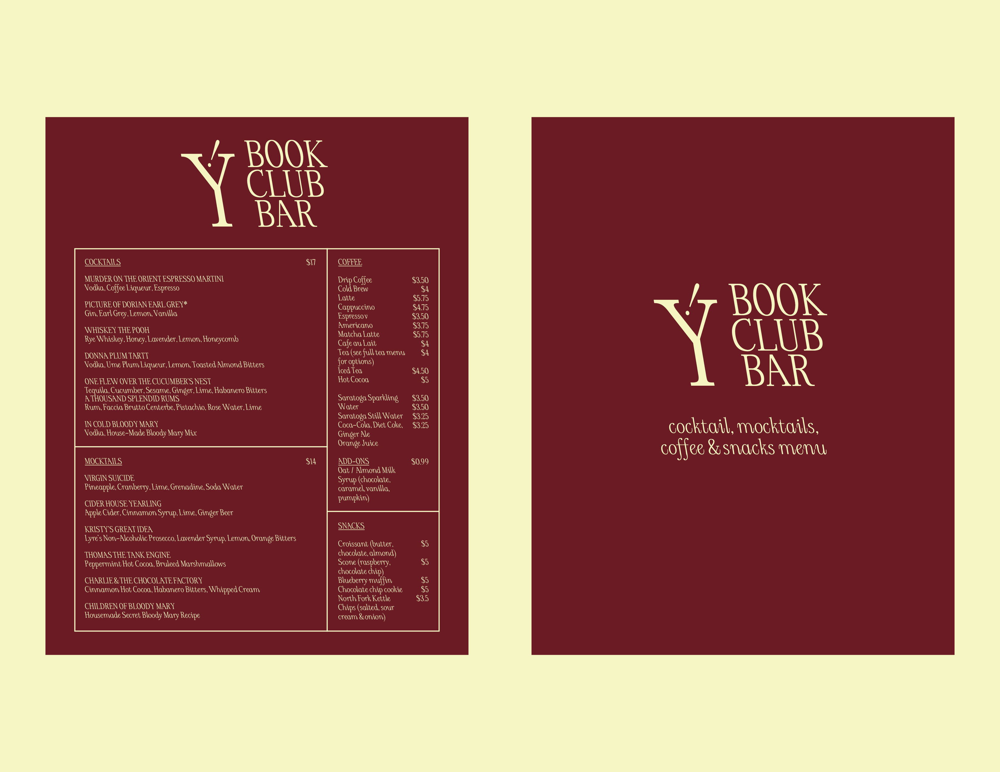
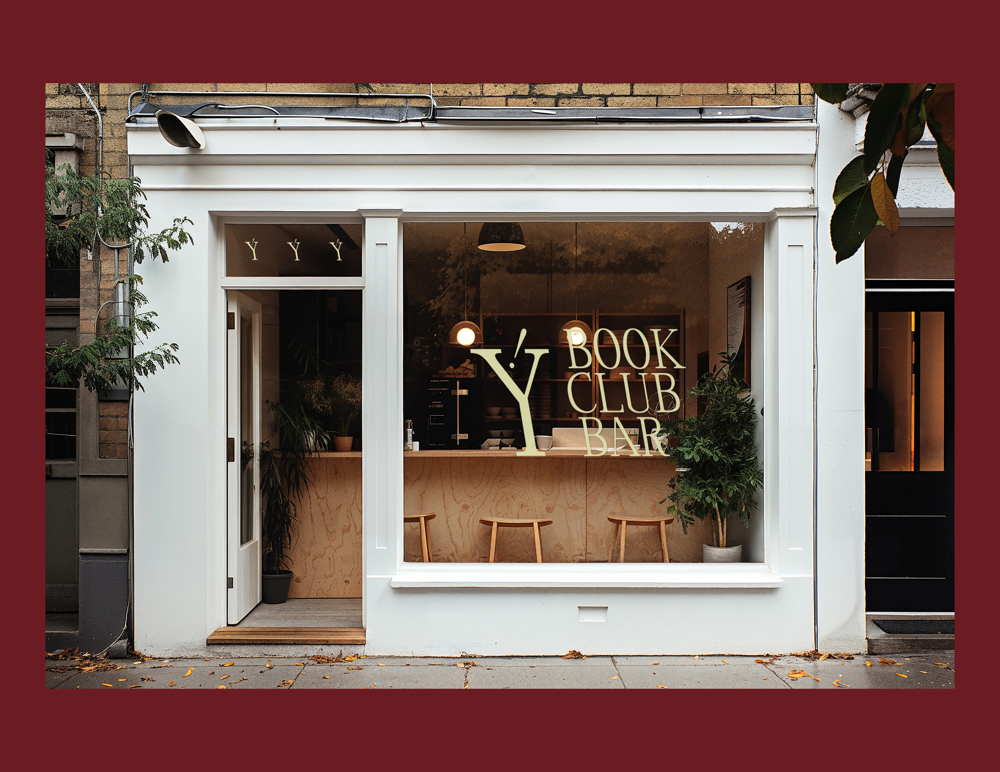
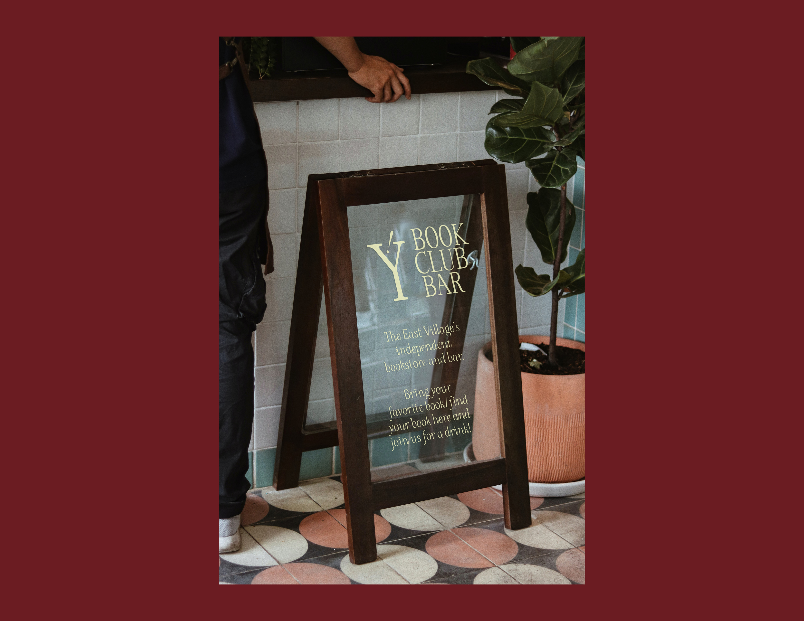

scilati (May 2025)
for TYPEFACE DESIGN with Sabrina Nacmias & Maxime Gau (SPRING 2025)

A serif typeface that slants to the left, challenging the conventional notions of italicization, which usually leans right.
This leftward slant creates a sense of reversal, making the reading experience feel slightly unexpected but still familiar. By combining a structured serif with this unconventional slant, I want to explore the balance between traditio and playfulness, pushing the boundaries of perception and legibility while maintaining a strong, distinctive character.
Typeface design using Glyphs 3








